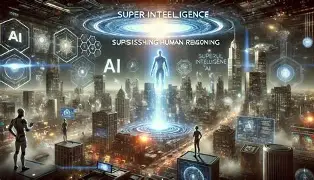
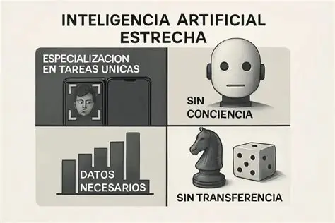

1. Definiciones importantes
La inteligencia artificial (IA) es una tecnología que permite a los ordenadores realizar tareas que normalmente necesitan inteligencia humana.
- Algoritmo: conjunto de instrucciones para resolver un problema.
- Datos: información utilizada por un sistema de IA.
- Aprendizaje automático: método que permite a un programa aprender a partir de datos.
- Chatbot: programa que conversa con las personas.
2. Tipos de inteligencia artificial
Podemos distinguir varios tipos de IA según sus capacidades:
- IA estrecha: está diseñada para realizar una tarea concreta, como reconocer imágenes.
- IA general: sería capaz de realizar muchas tareas intelectuales como una persona. Todavía no existe de forma completa.
- IA superinteligente: sería una IA que superase la inteligencia humana. Es una idea hipotética.


3. Historia de la IA
La inteligencia artificial comenzó a desarrollarse como campo científico durante el siglo XX. Con el aumento de la potencia de los ordenadores y la cantidad de datos, la IA ha avanzado mucho.
- En 1950, Alan Turing propuso una prueba para estudiar si una máquina podía mostrar un comportamiento inteligente.
- En 1956 se popularizó el término inteligencia artificial en una reunión científica.
- Durante las últimas décadas se han desarrollado sistemas capaces de reconocer voz, imágenes y generar textos.
4. Aplicaciones de la IA
- Medicina: ayuda a analizar imágenes y datos médicos.
- Educación: puede explicar contenidos y adaptar ejercicios.
- Transporte: se utiliza en sistemas de navegación y asistencia al conductor.
- Entretenimiento: recomienda películas, música y videojuegos.
- Industria: ayuda a automatizar tareas y detectar errores.
5. Futuro e inconvenientes de la IA
En el futuro, la IA podría ayudar a resolver problemas científicos y mejorar muchos servicios. Sin embargo, también tiene inconvenientes:
- Puede cometer errores o dar información falsa.
- Puede afectar a algunos puestos de trabajo.
- Es importante proteger los datos personales.
- Puede producir resultados injustos si aprende de datos con prejuicios.
Por eso debemos utilizarla de manera responsable y comprobar la información que nos ofrece.
Enlaces y recursos
| Recurso | Enlace |
|---|---|
| Vídeo | Ver vídeos sobre IA |
| Lugar | Ver lugares en Google Maps |
| Imágenes | Buscar imágenes |
| Documento | Abrir documento PDF |
| Página | Enlace |
|---|---|
| Más información | Abrir página 2 |